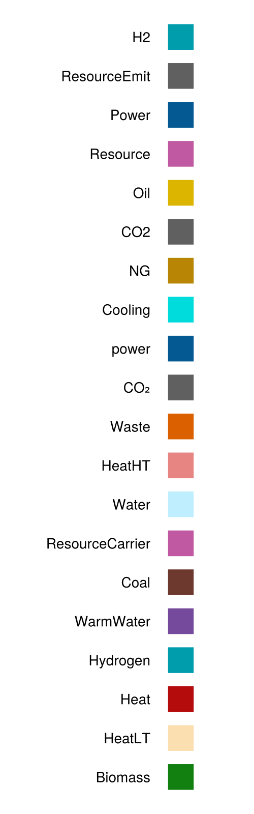

Customize colors
EnergyModelsGUI provides a set of colors for a set of frequently used Resource-ids. These can be found in src/colors.yml and are visualized below

If you have a Resource with another id or you want to alter the default colors, you need to specify the id_to_color_map option in the GUI function.
Say that your case[:products] contains the following products
NG = ResourceEmit("NG", 0.2)
Coal = ResourceCarrier("Coal", 0.35)
Power = ResourceCarrier("Power", 0.)
new_id = ResourceEmit("NewID",1.)and you want to alter the color of Coal and provide a custom color for the new ResourceEmit with id NewID, then simply do the following (colors can be a string in hex format or a symbol representing a named color from the Colors.jl package):
id_to_color_map = Dict(new_id.id => :yellow, NG.id => "#FF9876")
gui = GUI(case; id_to_color_map=id_to_color_map);